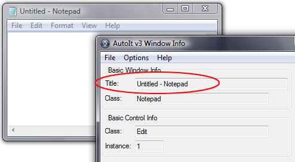
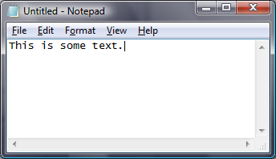
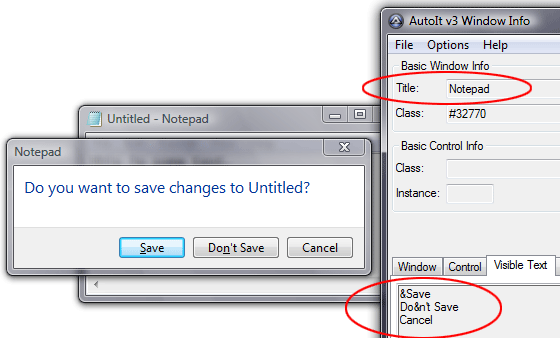

This tutorial explains how to automate the opening of Notepad, automatically type some text and then close Notepad. It is assumed that you are already familiar with creating and running AutoIt scripts as shown in the HelloWorld tutorial.
First create an empty script called npad.au3 and then edit the file (using Notepad or SciTe as you prefer).
The first thing we need to know is the name of the Notepad executable. It is notepad.exe - you can get this information by looking at the properties of the Notepad shortcut icon in the Start Menu. To execute Notepad we use the AutoIt Run function. This function simply launches a given executable and then continues.
Type in the first line of script as:
Run("notepad.exe")
Run the script - if all goes well then a new instance of Notepad should open.
When automating applications AutoIt can check for window title so that it knows which window it should work with. With Notepad the window title is obviously Untitled - Notepad. AutoIt is case-sensitive when using window titles so you must get the title exactly right - the best way to do this is to use the AutoIt Window Information Tool. Run the Information Tool from Start Menu \ AutoIt v3 \ AutoIt Window Info.
With the Info Tool open click on the newly opened Notepad window to activate it; the Info Tool will give you information about it. The information we are interested in is the window title.

Highlight the title in the AutoIt Info Tool window and press CTRL-C to copy it to the clipboard - we can then paste the title into our script without fear of misspelling it.
After Running a copy of Notepad we need to wait for it to appear and become active before we send any keystrokes. We can wait for a window using the WinWaitActive function. Most window-related functions in AutoIt take a window title as a parameter.
Enter the following as the second line in the script (use CTRL-V or Edit\Paste to paste our window title from the clipboard).
WinWaitActive("Untitled - Notepad")
After we are sure the Notepad window is visible we want to type in some text. This is done with the Send function.
Add this line to our script.
Send("This is some text.")
The entire script will now look like this:
Run("notepad.exe")
WinWaitActive("Untitled - Notepad")
Send("This is some text.")
Close the copy of Notepad that we previously opened (you will need to do this every time you run the script otherwise you will end up with lots of copies running!). Run the script.
You should see Notepad open, and then some text will magically appear!

Next we want to close notepad, we can do this with the WinClose function.
WinClose("Untitled - Notepad")
When Notepad tries to close you will get a message asking you to save the changes. Use the Window Info Tool to get details of the dialog that has popped up so that we can respond to it :)

So, we add a line to wait for this dialog to become active (we will also use the window text to make the function more reliable and to distinguish this new window from the original Notepad window):
WinWaitActive("Notepad", "&Save")
Next we want to automatically press ALT-N to select the No button (Underlined letters in windows usually indicate that you can use the ALT key and that letter as a keyboard shortcut). In the Send function to send an ALT key we use !
Send("!n")
Our complete script now looks like this:
Run("notepad.exe")
WinWaitActive("Untitled - Notepad")
Send("This is some text.")
WinClose("Untitled - Notepad")
WinWaitActive("Notepad", "&Save")
Send("!n")
Run the script and you will see Notepad open, some text appear, then close! You should be able to use the techniques learned in this tutorial to automate many other applications.